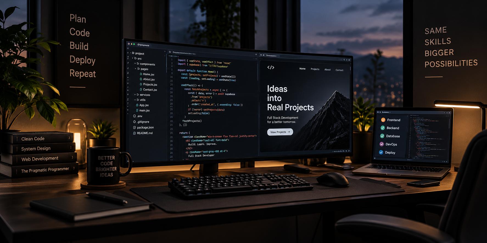

Qué es ser desarrollador Full Stack


El desarrollo Full Stack es uno de los perfiles más completos dentro del sector tecnológico. Un desarrollador
Full Stack tiene conocimientos tanto de frontend como de backend,
lo que le permite participar en diferentes partes de una aplicación web.
Este perfil es muy valorado porque entiende cómo se construye una web desde la parte visual que ve el usuario hasta la lógica interna que permite que todo funcione correctamente.
Funciones de un desarrollador Full Stack
Un desarrollador Full Stack puede trabajar en la estructura de una página, la organización del contenido, la creación de interfaces y la conexión con la parte interna de una aplicación.
Dentro del frontend se encarga de todo aquello que el usuario ve e interpreta. Dentro del backend participa en la lógica, los datos y los procesos que hacen posible el funcionamiento de la aplicación.
- Crear estructuras web claras y ordenadas.
- Trabajar con la parte visual de una aplicación.
- Comprender la lógica interna de un proyecto.
- Conectar diferentes partes de una aplicación web.
- Resolver problemas técnicos durante el desarrollo.
- Participar en proyectos digitales completos.
Un perfil cada vez más demandado
El perfil Full Stack es importante porque ofrece una visión amplia del desarrollo web. Aunque no significa dominarlo todo desde el primer día, sí permite entender cómo se conectan las diferentes partes de un proyecto digital.
Por eso, aprender desarrollo Full Stack puede ser una buena opción para quienes quieren introducirse en el mundo tecnológico con una base completa.
Volver al blog